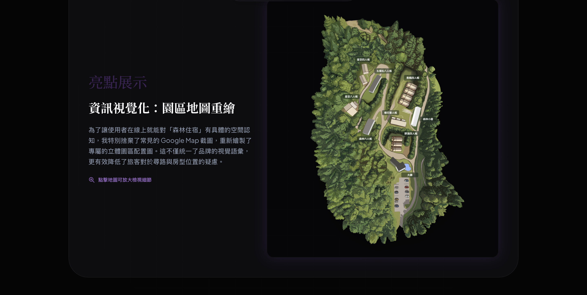
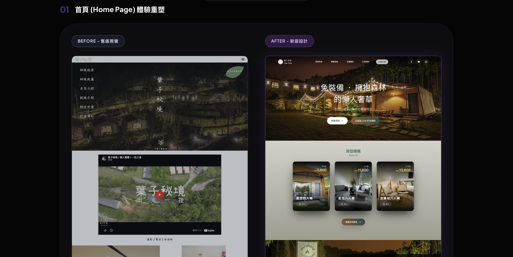
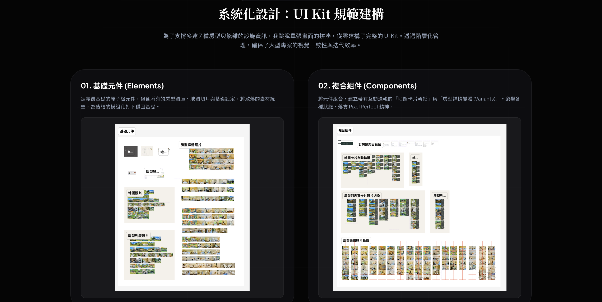

我是亦庭，目前就讀中原大學心理系。我不僅研究人類行為，更主動跨足介面設計與程式邏輯。我擅長將複雜的理論轉化為直觀的產品體驗。
Selected Works



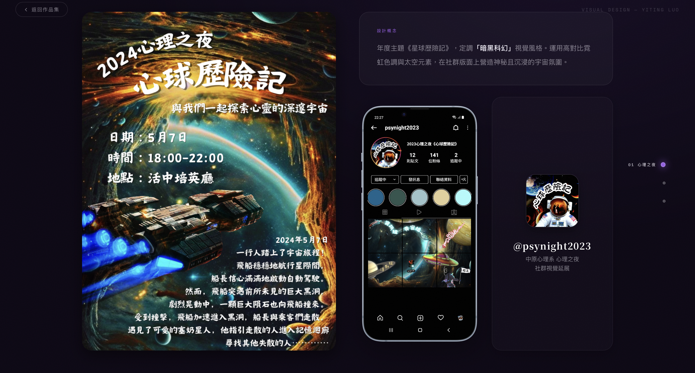
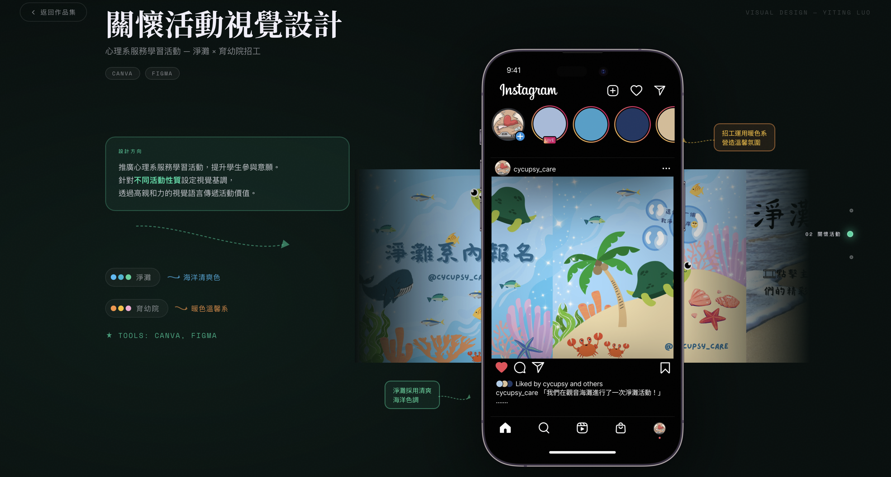
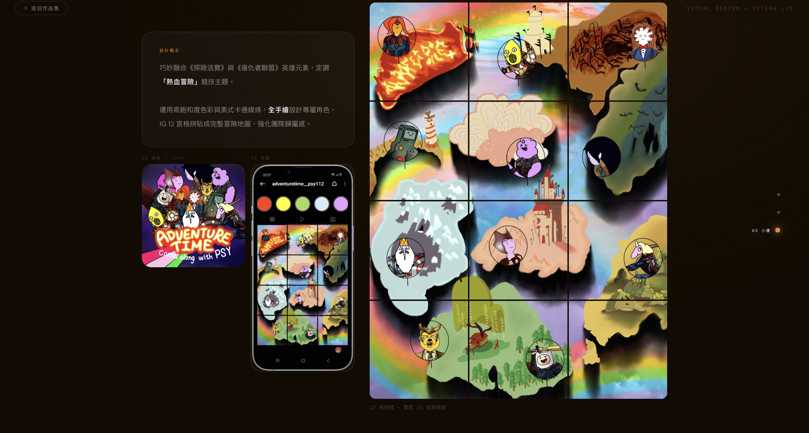
為富堡工業打造端對端 AI 客服，整合六路意圖分流、RAG 知識庫與客服後台，成果發表獲第二名。
心理學讓我懂得理解人，而各種工具則給了我實現想法的可能。從 Figma 的視覺設計、Python 的邏輯構建到現在的 AI 實踐，這是我持續進行中的成長紀錄。
往下看更多 ↓
在英文補習班四年的教學經歷，除了磨練出我的責任感，更讓我學會如何觀察對象的需求。我非常習慣將複雜的知識內容，拆解成易於理解的語言——這種『轉譯』的能力，也成為我現在溝通設計邏輯時最紮實的底層功力。
曾與團隊共同完成專題研究並於 TPA 年會發表。這段經歷讓我完整參與了從變項控制到量化分析的科學流程。心理學的訓練使我更傾向於透過證據來支撐決策，並在 UI/UX 實務中，將研究邏輯轉化為對使用者需求的換位思考與分析。
初次接觸 Open Science 工作坊時，我驚覺科學研究已不再侷限於紙本論述，而是能透過開源工具與程式碼進行更精確的測量與運算。這促使我投入 97 小時的 Python 訓練，以此作為跨域實踐的起點。
參與 AI University 實習生計畫，深入學習人工智慧的前沿知識與實務應用。正積極將這些新技術與我的心理學、程式與設計背景融合，尋找賦能未來產品體驗的新可能。
目前正在企業環境中累積實戰經驗。專注於介面排版、預約流程梳理與高擬真原型製作，產出兼具美感與實作可行性的產品方案，並確保設計方案能精準對接實務需求。
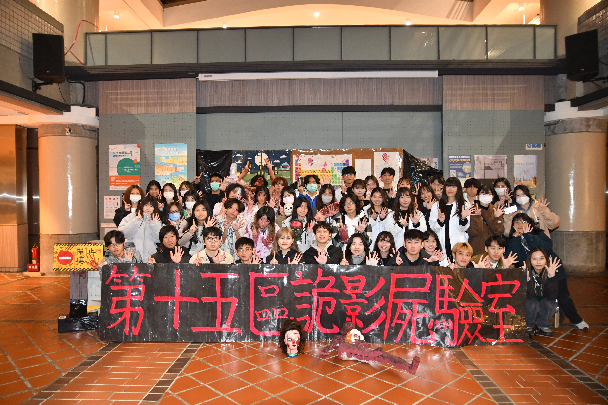
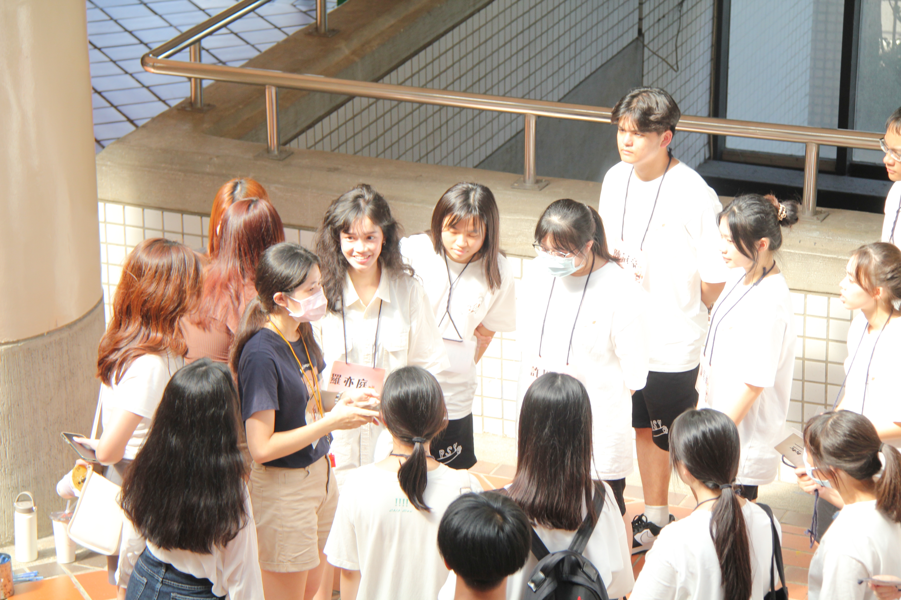
從心理之夜的視覺與公關，到小運會的美宣與現場隊輔，系上大大小小的活動我幾乎把各種職位都玩過了一輪。每一次我都嘗試接下不同的任務，透過親自參與去摸熟不同環節的運作。
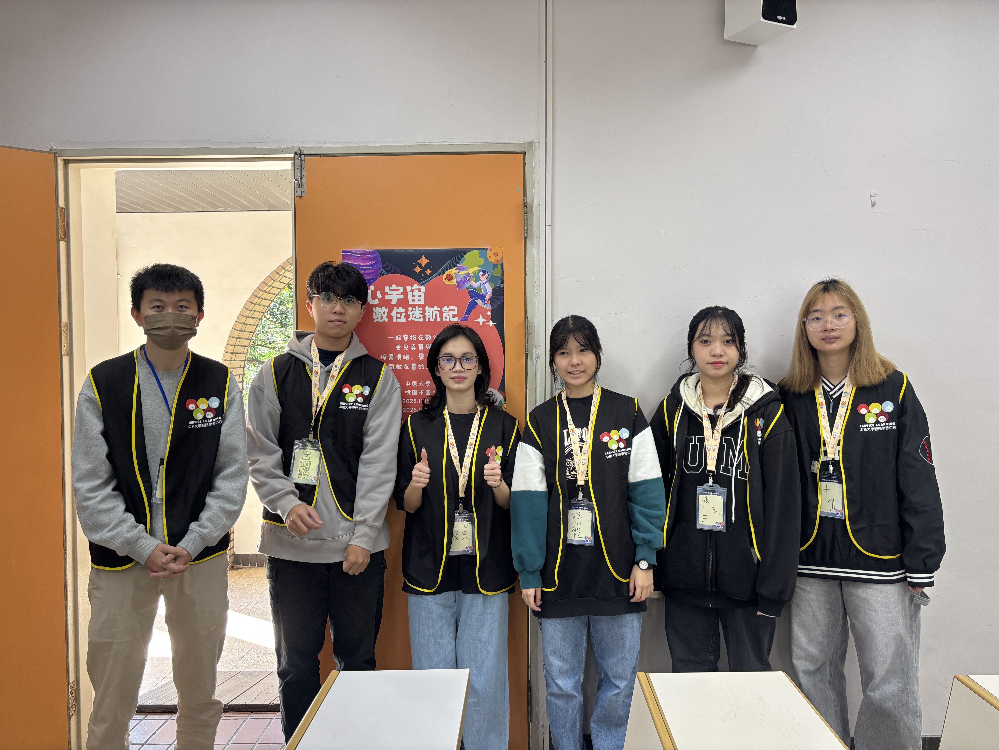
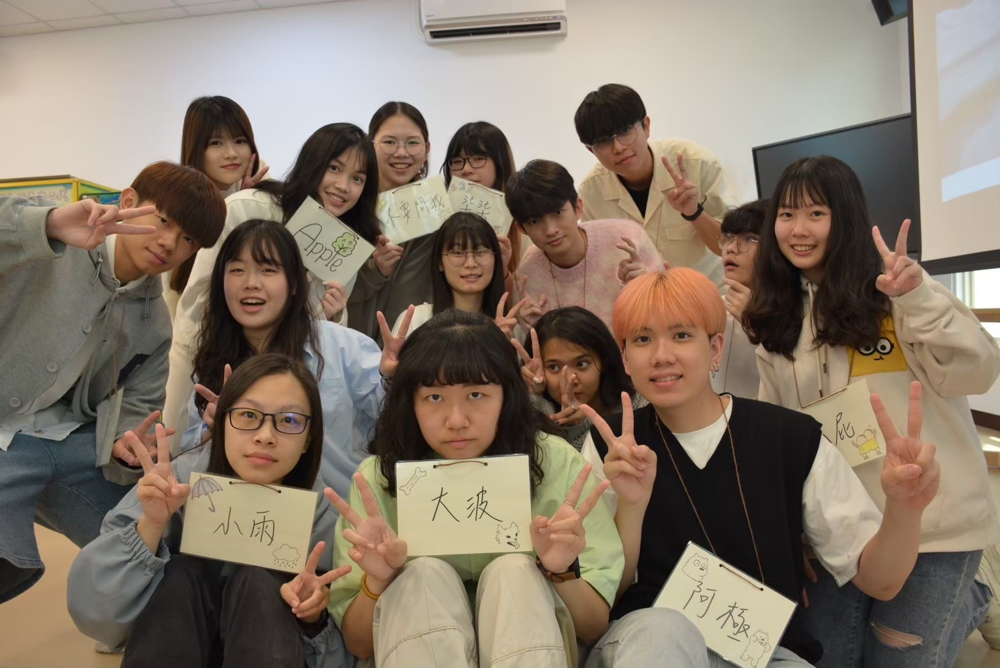
參與善牧基金會的一日營隊，任務不只是現場支援。我們從前期的培訓開始，針對數位危機的主題從零設計教案，最後將概念轉化為小朋友能懂的互動遊戲。
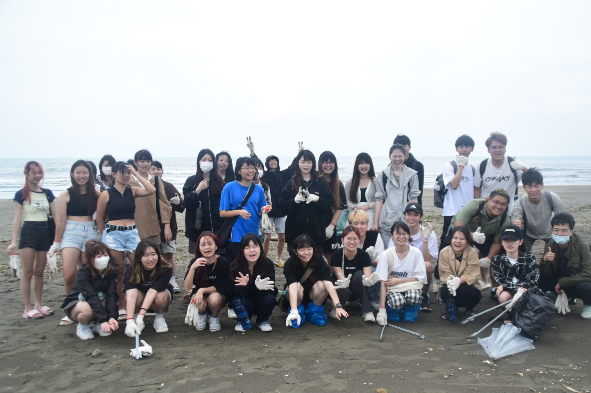
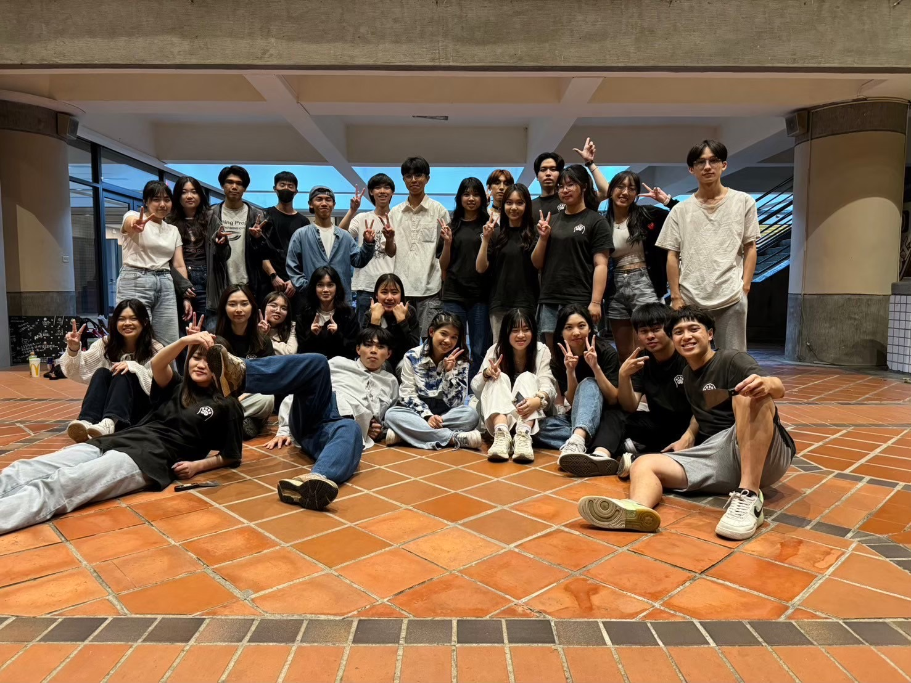
和團隊一起為育幼院籌劃一日營、量身設計教案，並因此獲頒 112 學年度中原大學全人關懷獎；平時也會去淨灘、到狗園幫忙或參與捐血志工。
點擊圖片可放大檢視詳細內容
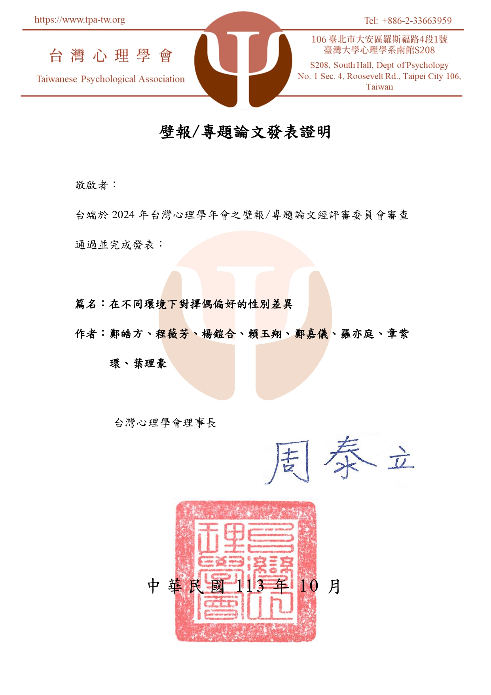
在不同環境下對擇偶偏好的性別差異研究。
18 週核心課程，奠定使用者體驗與設計理論基礎。
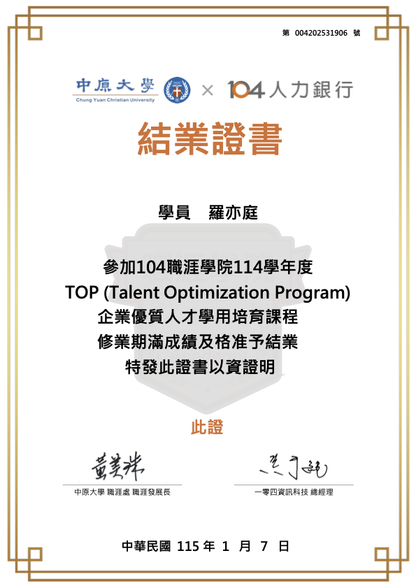
完成 114 學年度 TOP 計畫，具備企業核心職能認證。
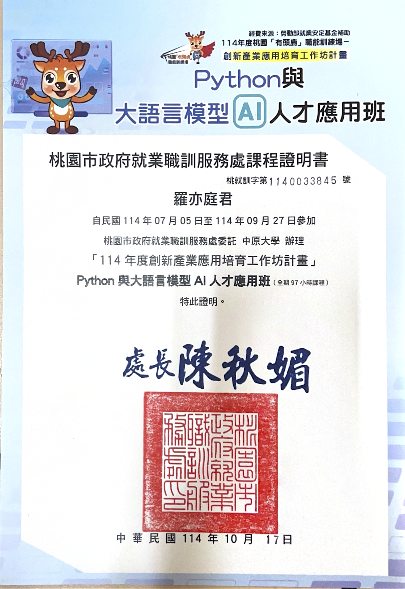
完成 97 小時專業課程，掌握大語言模型應用技術。

中原大學班級團體組冠軍，展現優秀溝通與團隊力。

投入育幼院社會服務，榮獲 112 學年度競賽佳作。